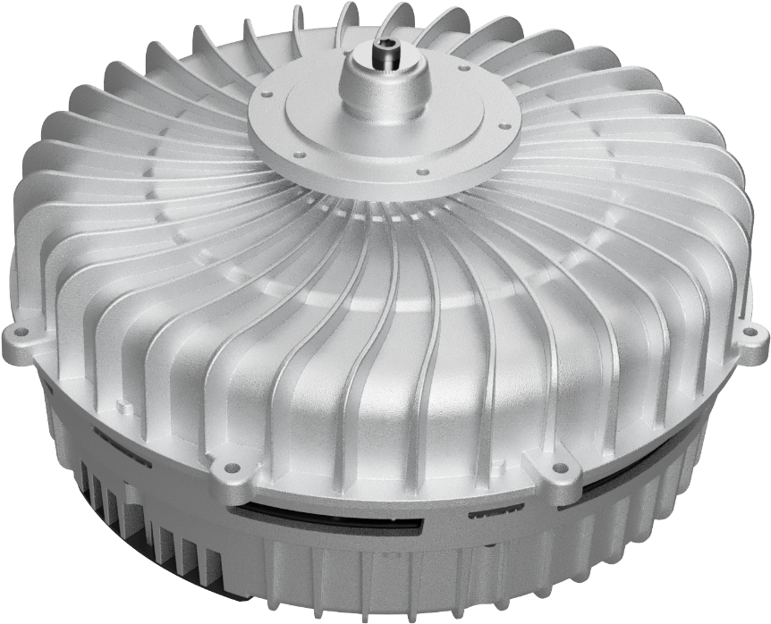
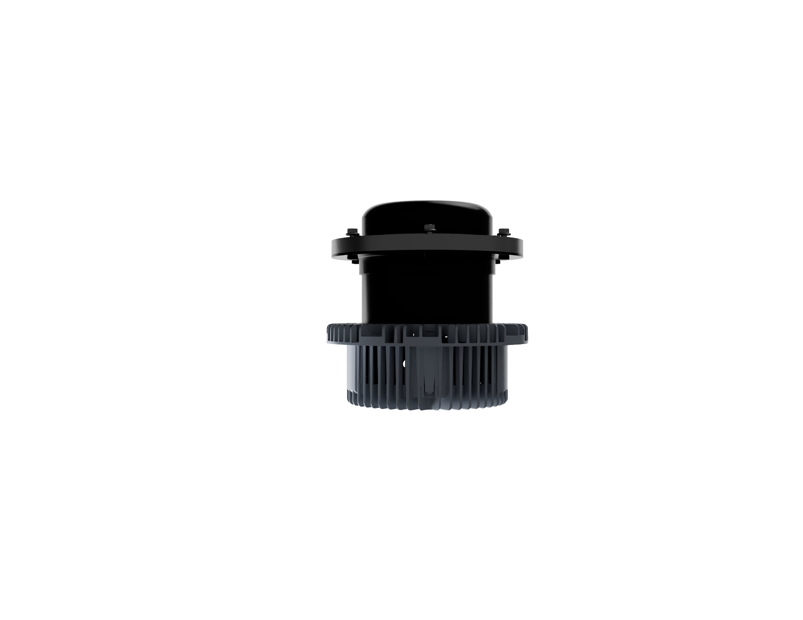

Efficiency driven
Designed for high motor-system efficiency, not only isolated laboratory motor efficiency.
A technical BLDC / EC motor platform for HVAC OEM integration: power electronics, Modbus RTU, diagnostics, protection logic, commissioning workflow and service documentation.

FLAGSHIP PRODUCT EXPERIENCE
ECTRA presents a high-efficiency inrunner BLDC / EC motor platform engineered for OEM integration, stable operation and measurable energy performance in HVAC equipment.
ACTIVE HOTSPOT
The outer housing provides a stable mechanical reference and a direct thermal path from the stator to the environment. This is one of the key advantages of an inrunner HVAC motor.

NOT A COMPONENT. A COMPLETE DRIVE ECOSYSTEM.
Designed for high motor-system efficiency, not only isolated laboratory motor efficiency.
EMI filter, DC-link, inverter, current control and protection logic inside one controlled platform.
0–10 V, digital enable and Modbus RTU prepared for BMS, PLC, SCADA and service tools.
Traceability, commissioning, fault handling, diagnostics and lifecycle documentation from day one.
VALUE FOR OEM HVAC
ECTRA combines high-efficiency BLDC / EC motor technology with practical OEM integration: stable inrunner mechanics, structured control interfaces, telemetry, diagnostics and lifecycle documentation.
Designed to reduce operating cost in continuous HVAC duty cycles through high-efficiency BLDC / EC motor operation.
Clear control modes, Modbus RTU communication, electrical interfaces and commissioning procedures for OEM projects.
Telemetry, fault codes, counters and documentation support faster diagnostics and more disciplined maintenance.
TECHNICAL OVERVIEW
ECTRA is structured as a controllable drive platform, not a simple rotating component. The product combines power conversion, motor control, measurements, fault handling, communication and defined lifecycle procedures.
3×400 VAC supply, internal DC-link, inverter stage, protective earthing and EMC-aware installation concept.
Analog 0–10 V, digital enable, percentage control, RPM / frequency references and Modbus-based operation.
Current, DC-link, ripple, temperature, communication status, feedback state and structured fault codes.
Traceability, commissioning checklist, parameter record, alarm matrix and maintenance workflow.
INRUNNER ADVANTAGE
ECTRA uses an inrunner architecture: the rotating system is compact and mechanically stiff, while the stator is in direct thermal contact with the housing. This architecture supports stable operation in demanding HVAC motor systems.
Lower radial and axial deflection, better alignment of the rotor-bearing system and reduced vibration risk.
Compact rotating assembly with reduced mass, lower mechanical stress and improved integration into HVAC equipment.
Lower rotating motor mass reduces bearing stress and supports longer service life in continuous HVAC operation.
The external stator is directly connected to the housing, improving heat transfer and reducing winding temperature.
ECTRA MOTOR PLATFORM
ACTIVE CONFIGURATION
Compact high-efficiency BLDC / EC platform for HVAC fan assemblies, AHU modules and small plug HVAC applications.
PRODUCT FAMILIES
The ECTRA platform is structured into defined motor families for different HVAC power classes. Each released variant shall be validated against its datasheet, wiring specification and project requirements.
POWER & CONTROL ARCHITECTURE
ECTRA combines mains input, filtering, DC-link, inverter stage, BLDC commutation, monitoring and communication in a compact motor-drive platform for HVAC OEM applications.
CONTROL ROOM EXPERIENCE
The platform provides structured access to status, setpoints, measurements, alarms and operating state through industrial interfaces.
TECHNICAL DATA
Typical platform values are shown for orientation. Binding values shall always be taken from the released product datasheet and nameplate.
MODBUS RTU INTERFACE
The communication layer is organised into functional groups so the integrator can separate control, measurements, feedback, alarms, thresholds and service data.
PERFORMANCE INTELLIGENCE
COMPLIANCE AND INTEGRATION
ECTRA motor documentation supports product integration, electrical installation, EMC discipline and conformity assessment of the final OEM equipment.
Designed in accordance with applicable CE requirements. Final conformity depends on the released motor variant and complete OEM system integration.
Prepared for compliance with North American standards. Certification status must be confirmed for each released motor variant.
Final EMC performance depends on grounding, shielding, cable routing, enclosure design and complete system integration.
COMMISSIONING WORKFLOW
Mounting, alignment, impeller balance, airflow path and vibration risk are checked before energisation.
Supply voltage, PE, cable routing, shielding, control wiring and RS-485 polarity are confirmed.
Control mode, setpoint limits, ramps, failsafe behaviour and communication settings are configured.
First start is performed at reduced speed with current, DC-link voltage, temperature and vibration monitoring.
DOCUMENTATION
ECTRA documentation supports the full technical workflow: transport, installation, electrical connection, commissioning, operation, diagnostics, maintenance, Modbus integration and service escalation.
APPLICATION CONFIDENCE
Electrical, mechanical and communication interfaces are documented for integration into customer HVAC equipment.
Performance and operating behaviour are evaluated using laboratory test data and defined application conditions.
Diagnostics, fault interpretation and commissioning procedures support controlled field operation.
OEM HVAC INTEGRATION
Contact ECTRA for BLDC / EC motor selection, technical data, wiring details, Modbus integration, commissioning support and application review.